Lógica de Escalera
"Ladder" diagrams
Los diagramas de escalera son esquemas especializados que se utilizan comúnmente para documentar sistemas lógicos de control industrial. Se les llama diagramas de "escalera" porque se parecen a una escalera, con dos rieles verticales (suministro de energía) y tantos "peldaños" (líneas horizontales) como circuitos de control hay que representar. Si quisiéramos dibujar un diagrama de escalera simple que muestre una lámpara controlada por un interruptor manual, se vería así:
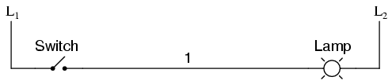
La "L1" y " L2"Las designaciones se refieren a los dos polos de un suministro de 120 VCA, a menos que se indique lo contrario. L1es el conductor "caliente", y L2es el conductor puesto a tierra ("neutro"). Estas designaciones no tienen nada que ver con los inductores, sólo para crear confusión. Por simplicidad, se omite el transformador o generador real que suministra energía a este circuito. En realidad, el circuito se parece a esto:
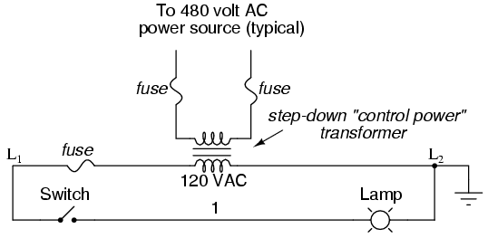
Normalmente, en los circuitos lógicos de relés industriales, pero no siempre, el voltaje de funcionamiento para los contactos del interruptor y las bobinas del relé será de 120 voltios CA. Los sistemas de CA de bajo voltaje e incluso de CC a veces se construyen y documentan de acuerdo con diagramas de "escalera":
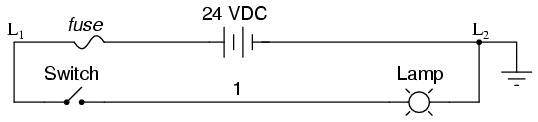
Siempre que los contactos del interruptor y las bobinas del relé tengan la clasificación adecuada, realmente no importa qué nivel de voltaje se elija para que funcione el sistema.
Tenga en cuenta el número "1" en el cable entre el interruptor y la lámpara. En el mundo real, ese cable estaría etiquetado con ese número, utilizando etiquetas adhesivas o termorretráctiles, donde fuera conveniente identificarlo. Los cables que conducen al interruptor estarían etiquetados como "L1" y "1", respectivamente. Los cables que conducen a la lámpara estarían etiquetados como "1" y "L2," respectivamente. Estos números de cables facilitan el montaje y el mantenimiento. Cada conductor tiene su propio número de cable exclusivo para el sistema de control en el que se utiliza. Los números de cables no cambian en ninguna unión o nodo, incluso si el tamaño, el color o la longitud del cable cambian al entrar o salir de un punto de conexión. Por supuesto, es preferible mantener colores de cables consistentes, pero esto no siempre es práctico. Lo que importa es que cualquier punto eléctricamente continuo en un circuito de control posea el mismo número de cable. Tome esta sección del circuito, por ejemplo, con cable #25 como un punto único y eléctricamente continuo que se conecta a muchos dispositivos diferentes:
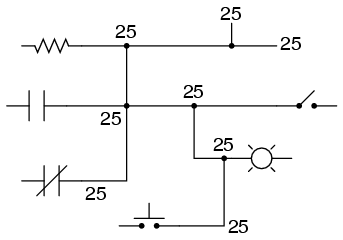
En los diagramas de escalera, el dispositivo de carga (lámpara, bobina de relé, bobina de solenoide, etc.) casi siempre se dibuja en el lado derecho del peldaño. Si bien no importa eléctricamente dónde se encuentra la bobina del relé dentro del peldaño,haceNo importa qué extremo de la fuente de alimentación de la escalera esté conectado a tierra, para un funcionamiento confiable.
Tomemos por ejemplo este circuito:
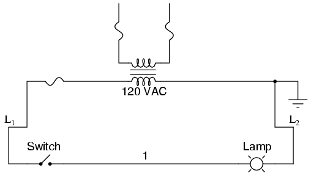
Aquí, la lámpara (carga) se encuentra en el lado derecho del peldaño, al igual que la conexión a tierra para la fuente de energía. Esto no es un accidente ni una coincidencia; más bien, es un elemento intencionado de buenas prácticas de diseño. Supongamos que el cable n.° 1 entrara accidentalmente en contacto con tierra, ya que el aislamiento de ese cable se había desgastado de modo que el conductor desnudo entró en contacto con un conducto metálico conectado a tierra. Nuestro circuito ahora funcionaría así:
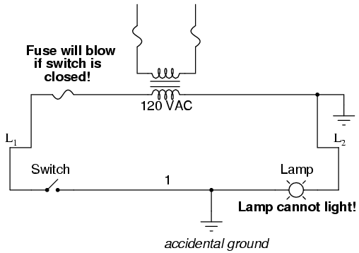
Con ambos lados de la lámpara conectados a tierra, la lámpara sufrirá un "cortocircuito" y no podrá recibir energía para encenderse. Si el interruptor se cerrara, se produciría un cortocircuito que haría saltar inmediatamente el fusible.
Sin embargo, considere lo que sucedería con el circuito con la misma falla (el cable n.° 1 entra en contacto con tierra), excepto que esta vez intercambiaremos las posiciones del interruptor y el fusible (L2todavía está castigado):
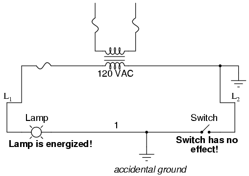
Esta vez, la conexión a tierra accidental del cable n.° 1 forzará la alimentación a la lámpara, mientras que el interruptor no tendrá ningún efecto. Es mucho más seguro tener un sistema que quema un fusible en caso de una falla a tierra que tener un sistema que energiza incontrolablemente lámparas, relés o solenoides en caso de la misma falla. Por esta razón, las cargas siempre deben ubicarse más cerca del conductor de alimentación puesto a tierra en el diagrama de escalera.
- REVISAR:
- Los diagramas de escalera (a veces llamados "lógica de escalera") son un tipo de notación y simbología eléctrica que se utilizan con frecuencia para ilustrar cómo se interconectan los interruptores y relés electromecánicos.
- Las dos líneas verticales se denominan "rieles" y se conectan a polos opuestos de una fuente de alimentación, generalmente de 120 voltios de CA. l1designa el cable de CA "caliente" y L2el conductor "neutro" (a tierra).
- Las líneas horizontales en un diagrama de escalera se denominan "peldaños", y cada uno de ellos representa una rama de circuito paralelo única entre los polos de la fuente de alimentación.
- Normalmente, los cables de los sistemas de control están marcados con números y/o letras para su identificación. La regla es que todos los puntos conectados permanentemente (eléctricamente comunes) deben llevar la misma etiqueta.
Digital logic functions
Podemos construir funciones lógicas sencillas para nuestro circuito hipotético de lámpara, utilizando múltiples contactos, y documentar estos circuitos de manera bastante fácil y comprensible con peldaños adicionales a nuestra "escalera" original. Si utilizamos notación binaria estándar para el estado de los interruptores y la lámpara (0 para no activados o desenergizados; 1 para activados o energizados), se puede hacer una tabla de verdad para mostrar cómo funciona la lógica:
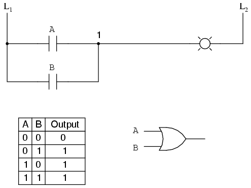
Ahora, la lámpara se encenderá si se activa el contacto A o el contacto B, porque todo lo que se necesita para que la lámpara se energice es tener al menos un camino para la corriente desde el cable L.1para cablear 1. Lo que tenemos es una función lógica OR simple, implementada con nada más que contactos y una lámpara.
Podemos imitar la función lógica AND cableando los dos contactos en serie en lugar de en paralelo:
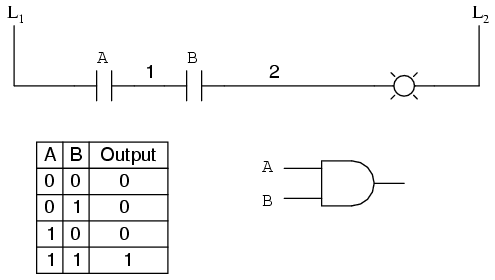
Ahora, la lámpara se energiza sólo si el contacto AandEl contacto B se acciona simultáneamente. Existe un camino para la corriente desde el cable L1a la lámpara (cable 2) si y sólo siambosLos contactos del interruptor están cerrados.
La función de inversión lógica, o NOT, se puede realizar en una entrada de contacto simplemente usando un contacto normalmente cerrado en lugar de un contacto normalmente abierto:
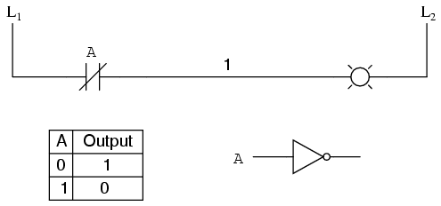
Ahora, la lámpara se energiza si el contacto estánotacciona y se desactiva cuando el contactoisaccionado.
Si tomamos nuestra función OR e invertimos cada "entrada" mediante el uso de contactos normalmente cerrados, terminaremos con una función NAND. En una rama especial de las matemáticas conocida comoálgebra booleana, este efecto del cambio de identidad de la función de puerta con la inversión de las señales de entrada se describe porTeorema de De Morgan, un tema que se explorará con más detalle en un capítulo posterior.
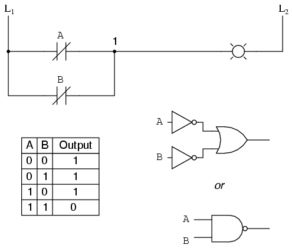
La lámpara se energizará sicualquierael contacto no está activado. Se apagará sólo siambosLos contactos se activan simultáneamente.
Del mismo modo, si tomamos nuestra función AND e invertimos cada "entrada" mediante el uso de contactos normalmente cerrados, terminaremos con una función NOR:
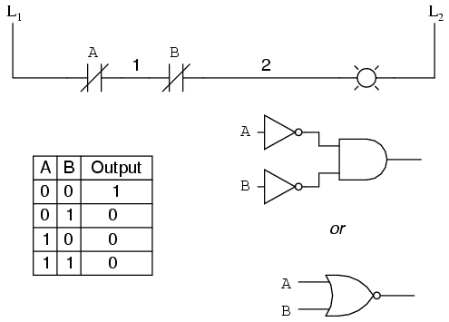
Un patrón se revela rápidamente cuando se comparan los circuitos en escalera con sus homólogos de puerta lógica:
- Los contactos paralelos equivalen a una puerta OR.
- Los contactos en serie equivalen a una puerta AND.
- Los contactos normalmente cerrados equivalen a una puerta NOT (inversor).
También podemos construir funciones lógicas combinacionales agrupando contactos en disposiciones serie-paralelo. En el siguiente ejemplo, tenemos una función O exclusiva construida a partir de una combinación de puertas Y, O y inversor (NO):
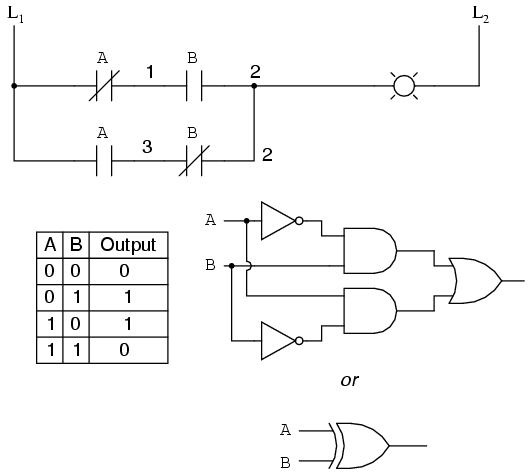
El peldaño superior (contacto NC A en serie con contacto NA B) es el equivalente a la combinación de puerta NO/Y superior. El peldaño inferior (contacto NA A en serie con contacto NC B) es el equivalente a la combinación de puerta NO/Y inferior. La conexión paralela entre los dos peldaños en el cable número 2 forma el equivalente de la puerta OR, al permitir que cualquiera de los peldaños 1orpeldaño 2 para energizar la lámpara.
Para realizar la función O Exclusivo, tuvimos que utilizar dos contactos por entrada: uno para entrada directa y otro para entrada "invertida". Los dos contactos "A" son accionados físicamente por el mismo mecanismo, al igual que los dos contactos "B". La asociación común entre contactos se indica mediante la etiqueta del contacto. No hay límite en cuanto a la cantidad de contactos por interruptor que se pueden representar en un diagrama de escalera, ya que cada nuevo contacto en cualquier interruptor o relé (ya sea normalmente abierto o normalmente cerrado) utilizado en el diagrama simplemente está marcado con la misma etiqueta.
A veces, varios contactos en un solo interruptor (o relé) se designan mediante etiquetas compuestas, como "A-1" y "A-2" en lugar de dos etiquetas "A". Esto puede resultar especialmente útil si desea designar específicamente qué conjunto de contactos en cada interruptor o relé se utiliza para qué parte de un circuito. En aras de la simplicidad, me abstendré de etiquetas tan elaboradas en esta lección. Si ve una etiqueta común para varios contactos, sabrá que todos esos contactos están activados por el mismo mecanismo.
Si deseamos invertir elproducciónde cualquier función lógica generada por un interruptor, debemos utilizar un relé con un contacto normalmente cerrado. Por ejemplo, si queremos energizar una carga en base a lo inverso, o NO, de un contacto normalmente abierto, podríamos hacer esto:
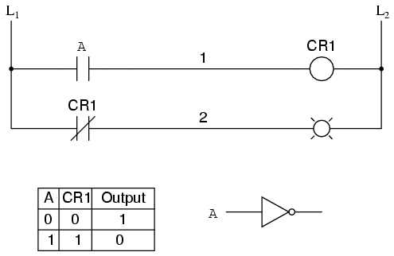
Llamaremos al relé "relé de control 1" o CR1. Cuando la bobina de CR1(simbolizado con el par de paréntesis en el primer peldaño) está energizado, el contacto en el segundo peldañoabre, desenergizando así la lámpara. Del interruptor A a la bobina de CR1, la función lógica no está invertida. El contacto normalmente cerrado accionado por la bobina del relé CR1proporciona una función de inversor lógico para accionar la lámpara en sentido opuesto al estado de actuación del interruptor.
Al aplicar esta estrategia de inversión a una de nuestras funciones de entrada invertida creadas anteriormente, como OR a NAND, podemos invertir la salida con un relé para crear una función no invertida:
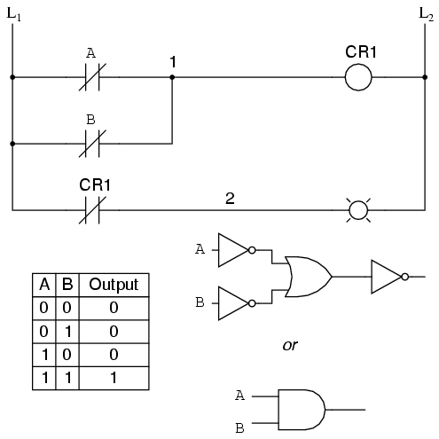
De los interruptores a la bobina de CR1, la función lógica es la de una puerta NAND. CR1El contacto normalmente cerrado proporciona una inversión final para convertir la función NAND en una función AND.
- REVISAR:
- Los contactos paralelos son lógicamente equivalentes a una puerta OR.
- Los contactos en serie son lógicamente equivalentes a una puerta AND.
- Los contactos normalmente cerrados (N.C.) son lógicamente equivalentes a una puerta NOT.
- Se debe utilizar un relé para invertir elproducciónde una función de puerta lógica, mientras que los contactos de interruptor simples normalmente cerrados son suficientes para representar la puerta invertida.entradas.
Circuitos de permiso e interbloqueo
Una aplicación práctica de la lógica de interruptores y relés es en sistemas de control donde se deben cumplir varias condiciones de proceso antes de que se permita que se inicie un equipo. Un buen ejemplo de esto es el control de quemadores para grandes hornos de combustión. Para que los quemadores de un horno grande se enciendan de forma segura, el sistema de control solicita "permiso" de varios interruptores de proceso, incluida la presión alta y baja del combustible, la verificación del flujo del ventilador de aire, la posición de la compuerta de la chimenea de escape, la posición de la puerta de acceso, etc.permisivo, y cada contacto del interruptor permisivo está cableado en serie, de modo que si alguno de ellos detecta una condición insegura, el circuito se abrirá:
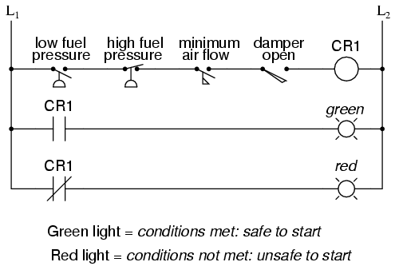
Si se cumplen todas las condiciones permisivas, CR1se energizará y la lámpara verde se encenderá. En la vida real, se energizaría algo más que una lámpara verde: generalmente se colocaría un relé de control o un solenoide de válvula de combustible en ese escalón del circuito para ser energizado cuando todos los contactos permisivos estuvieran "buenos": es decir, todos cerrados. Si no se cumple alguna de las condiciones permisivas, la serie de contactos del interruptor se romperá, CR2se desenergizará y la lámpara roja se encenderá.
Tenga en cuenta que el contacto de alta presión de combustible está normalmente cerrado. Esto se debe a que queremos que el contacto del interruptor se abra si la presión del combustible sube demasiado. Dado que la condición "normal" de cualquier interruptor de presión es cuando se le aplica presión cero (baja) y queremos que este interruptor se abra con una presión excesiva (alta), debemos elegir un interruptor que esté cerrado en su estado normal.
Otra aplicación práctica de la lógica de relés es en sistemas de control donde queremos garantizar que no puedan ocurrir dos eventos incompatibles al mismo tiempo. Un ejemplo de esto es el control de motor reversible, donde dos contactores de motor están conectados para cambiar la polaridad (o secuencia de fases) a un motor eléctrico, y no queremos que los contactores de avance y retroceso se energicen simultáneamente:
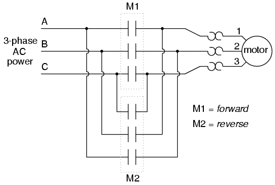
Cuando el contactor M1está energizado, las 3 fases (A, B y C) se conectan directamente a los terminales 1, 2 y 3 del motor, respectivamente. Sin embargo, cuando el contactor M2se energiza, las fases A y B se invierten, A va al terminal 2 del motor y B va al terminal 1 del motor. Esta inversión de los cables de fase da como resultado que el motor gire en la dirección opuesta. Examinemos el circuito de control de estos dos contactores:
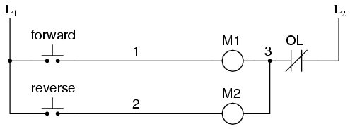
Tome nota del contacto "OL" normalmente cerrado, que es el contacto de sobrecarga térmica activado por los elementos "calentadores" conectados en serie con cada fase del motor de CA. Si los calentadores se calientan demasiado, el contacto cambiará de su estado normal (cerrado) a abierto, lo que evitará que cualquiera de los contactores se energice.
Este sistema de control funcionará bien, siempre y cuando nadie presione ambos botones al mismo tiempo. Si alguien hiciera eso, las fases A y B se cortocircuitarían entre sí debido al hecho de que el contactor M1envía las fases A y B directamente al motor y al contactor M2los invierte; la fase A estaría en cortocircuito con la fase B y viceversa. ¡Obviamente, este es un mal diseño del sistema de control!
Para evitar que esto suceda, podemos diseñar el circuito de modo que la energización de un contactor impida la energización del otro. esto se llamaentrelazado, y se logra mediante el uso de contactos auxiliares en cada contactor, como tal:
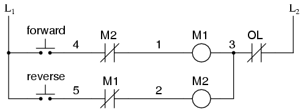
Ahora, cuando M1está energizado, el contacto auxiliar normalmente cerrado en el segundo peldaño estará abierto, evitando así que M2se energice, incluso si se acciona el botón "Reversa". Asimismo, M.1La energización de se evita cuando M2está energizado. Tenga en cuenta también cómo se agregaron números de cables adicionales (4 y 5) para reflejar los cambios en el cableado.
Cabe señalar que esta no es la única forma de interbloquear contactores para evitar una condición de cortocircuito. Algunos contactores vienen equipados con la opción de unmecánicoenclavamiento: palanca que une las armaduras de dos contactores para impedir físicamente su cierre simultáneo. Para mayor seguridad, aún se pueden utilizar enclavamientos eléctricos y, debido a la simplicidad del circuito, no hay una buena razón para no emplearlos además de los enclavamientos mecánicos.
- REVISAR:
- Los contactos de interruptor instalados en un peldaño de lógica de escalera diseñados para interrumpir un circuito si no se cumplen ciertas condiciones físicas se denominanpermisivocontactos, porque el sistema requiere permiso de estas entradas para activarse.
- Los contactos de interruptor diseñados para evitar que un sistema de control realice dos acciones incompatibles a la vez (como alimentar un motor eléctrico hacia adelante y hacia atrás simultáneamente) se denominanenclavamientos.
Motor control circuits
Los contactos de enclavamiento instalados en el circuito de control del motor de la sección anterior funcionan bien, pero el motor funcionará sólo mientras se mantenga presionado cada botón. Si quisiéramos mantener el motor en marcha incluso después de que el operador retire su mano de los interruptores de control, podríamos cambiar el circuito de un par de maneras diferentes: podríamos reemplazar los interruptores de botón con interruptores de palanca, o podríamos agregar algo más de lógica de relé para "bloquear" el circuito de control con una única actuación momentánea de cualquiera de los interruptores. Veamos cómo se implementa el segundo enfoque, ya que se usa comúnmente en la industria:
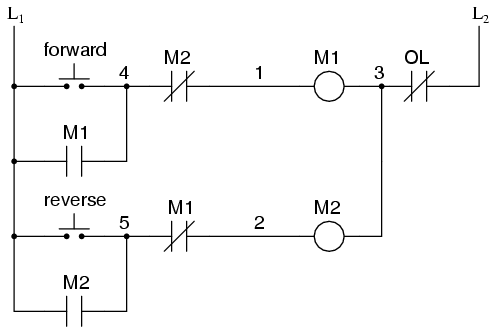
Cuando se acciona el botón "Adelante", M1se energizará, cerrando el contacto auxiliar normalmente abierto en paralelo con ese interruptor. Cuando se suelta el pulsador, el M cerrado1El contacto auxiliar mantendrá la corriente a la bobina de M.1, bloqueando así el circuito "Adelante" en el estado "encendido". Lo mismo sucederá cuando se presione el botón "Reversa". Estos contactos auxiliares paralelos a veces se denominanselladocontactos, la palabra "sello" significa esencialmente lo mismo que la palabrapestillo.
Sin embargo, esto crea un nuevo problema: ¿cómodetenerel motor! Como el circuito existe en este momento, el motor funcionará hacia adelante o hacia atrás una vez que se presione el interruptor de botón correspondiente, y continuará funcionando mientras haya energía. Para detener cualquiera de los circuitos (hacia adelante o hacia atrás), requerimos algún medio para que el operador interrumpa la alimentación a los contactores del motor. Llamaremos a este nuevo interruptor,Detener:
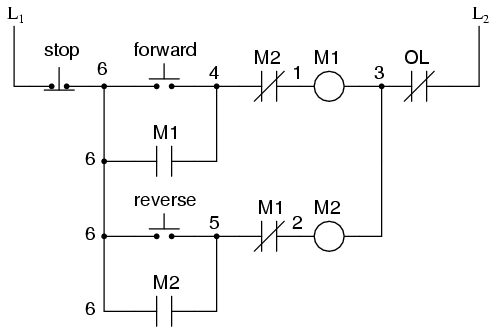
Ahora, si los circuitos directo o inverso están bloqueados, se pueden "desbloquear" presionando momentáneamente el botón "Parar", que abrirá el circuito directo o inverso, desenergizando el contactor energizado y devolviendo el contacto sellado a su estado normal (abierto). El interruptor de "Parada", que tiene contactos normalmente cerrados, conducirá energía a los circuitos directos o inversos cuando se suelte.
Hasta ahora, todo bien. Consideremos otro aspecto práctico de nuestro esquema de control de motores antes de dejar de agregarle más. Si nuestro motor hipotético hiciera girar una carga mecánica con mucho impulso, como un ventilador de aire grande, el motor podría continuar funcionando por inercia durante un período de tiempo considerable después de presionar el botón de parada. Esto podría ser problemático si un operador intentara invertir la dirección del motor sin esperar a que el ventilador deje de girar. Si el ventilador todavía estaba avanzando y se presionaba el botón "Reversa", el motor tendría dificultades para superar la inercia del ventilador grande mientras intentaba comenzar a girar en reversa, consumiendo una corriente excesiva y reduciendo potencialmente la vida útil del motor, los mecanismos de accionamiento y el ventilador. Lo que nos gustaría tener es algún tipo de función de retardo en este sistema de control del motor para evitar que ocurra un arranque tan prematuro.
Comencemos agregando un par de bobinas de relé de retardo de tiempo, una en paralelo con cada bobina de contactor del motor. Si utilizamos contactos que retrasan el regreso a su estado normal, estos relés nos proporcionarán una "memoria" de en qué dirección giró por última vez el motor. Lo que queremos que haga cada contacto de retardo es abrir la pata del interruptor de arranque del circuito de rotación opuesto durante varios segundos, mientras el ventilador se detiene.
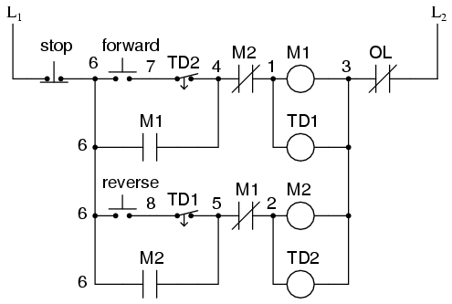
Si el motor ha estado funcionando en dirección de avance, ambos M1y TD1habrá sido energizado. Siendo este el caso, el contacto normalmente cerrado y temporizado del TD1entre los cables 8 y 5 se habrá abierto inmediatamente en el momento TD1estaba energizado. Cuando se pulsa el botón de parada, póngase en contacto con TD1espera la cantidad de tiempo especificada antes de regresar a su estado normalmente cerrado, manteniendo así abierto el circuito del botón pulsador de marcha atrás durante el tiempo necesario para que M2No se puede energizar. Cuando TD1se agota el tiempo, el contacto se cerrará y el circuito permitirá que M2ser energizado, si se presiona el botón de retroceso. De la misma manera, TD2impedirá que el botón "Adelante" energice M1hasta el retraso prescrito después de M2(y TD2) han sido desenergizados.
El observador cuidadoso notará que las funciones de entrelazado temporal de TD1y TD2renderizar la M1y m2contactos de enclavamiento redundantes. Podemos deshacernos de los contactos auxiliares M1y m2para enclavamientos y solo use TD1y TD2Los contactos de, ya que se abren inmediatamente cuando sus respectivas bobinas de relé están energizadas, "bloqueando" así un contactor si el otro está energizado. Cada relé de retardo tendrá un doble propósito: evitar que el otro contactor se energice mientras el motor está en funcionamiento y evitar que el mismo contactor se energice hasta un tiempo prescrito después de que el motor se apague. El circuito resultante tiene la ventaja de ser más sencillo que el ejemplo anterior:
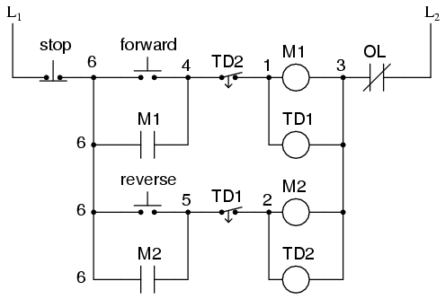
- REVISAR:
- Las bobinas del contactor del motor (o "arranque") generalmente se designan con la letra "M" en los diagramas de lógica de escalera.
- El funcionamiento continuo del motor con un interruptor de "arranque" momentáneo es posible si un contacto "sellado" normalmente abierto del contactor se conecta en paralelo con el interruptor de arranque, de modo que una vez que el contactor esté energizado mantenga energía para sí mismo y se mantenga "enganchado".
- Los relés de retardo de tiempo se usan comúnmente en circuitos de control de motores grandes para evitar que el motor arranque (o invierta) hasta que haya transcurrido una cierta cantidad de tiempo desde un evento.
Diseño a prueba de fallos
Los circuitos lógicos, ya sean relés electromecánicos o compuertas de estado sólido, se pueden construir de muchas maneras diferentes para realizar las mismas funciones. Por lo general, no existe una forma "correcta" de diseñar un circuito lógico complejo, pero generalmente hay formas que son mejores que otras.
En los sistemas de control, la seguridad es (o al menos debería ser) una importante prioridad de diseño. Si hay varias formas en las que se puede diseñar un circuito de control digital para realizar una tarea, y una de esas formas tiene ciertas ventajas de seguridad sobre las otras, entonces ese diseño es el mejor para elegir.
Echemos un vistazo a un sistema simple y consideremos cómo podría implementarse en la lógica de retransmisión. Supongamos que un gran laboratorio o edificio industrial va a estar equipado con un sistema de alarma contra incendios, activado por cualquiera de los varios interruptores de enclavamiento instalados en toda la instalación. El sistema debe funcionar de manera que la sirena de alarma se active si se acciona cualquiera de los interruptores. A primera vista, parece que la lógica del relé debería ser increíblemente simple: simplemente use contactos de interruptor normalmente abiertos y conéctelos todos en paralelo entre sí:
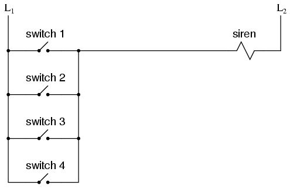
Básicamente, se trata de la función lógica OR implementada con cuatro entradas de interruptor. Podríamos expandir este circuito para incluir cualquier número de entradas de interruptor, agregando cada nuevo interruptor a la red paralela, pero lo limitaré a cuatro en este ejemplo para simplificar las cosas. En cualquier caso, es un sistema elemental y parece haber pocas posibilidades de que surjan problemas.
Excepto en el caso de una falla en el cableado, claro está. La naturaleza de los circuitos eléctricos es tal que estadísticamente es más probable que ocurran fallas "abiertas" (contactos de interruptor abiertos, conexiones de cables rotas, bobinas de relé abiertas, fusibles quemados, etc.) que cualquier otro tipo de falla. Teniendo esto en cuenta, tiene sentido diseñar un circuito para que sea lo más tolerante posible ante tal fallo. Supongamos que una conexión de cable para el interruptor n.° 2 falla al abrirse:
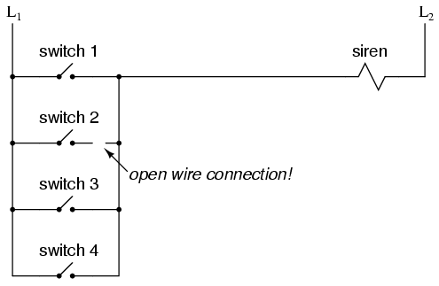
Si ocurriera esta falla, el resultado sería que el interruptor n.° 2 ya no energizaría la sirena si se accionara. Esto, obviamente, no es bueno en un sistema de alarma contra incendios. A menos que el sistema se probara periódicamente (una buena idea de todos modos), nadie sabría que había un problema hasta que alguien intentara usar ese interruptor en caso de emergencia.
¿Qué pasaría si el sistema se rediseñara para hacer sonar la alarma en caso de una falla abierta? De esa manera, una falla en el cableado resultaría en una falsa alarma, un escenario mucho más preferible que el de que un interruptor falle silenciosamente y no funcione cuando sea necesario. Para lograr este objetivo de diseño, tendríamos que volver a cablear los interruptores para que unabiertocontacto hizo sonar la alarma, en lugar de unacerradocontacto. Siendo ese el caso, los interruptores tendrán que estar normalmente cerrados y en serie entre sí, alimentando una bobina de relé que luego activa un contacto normalmente cerrado para la sirena:
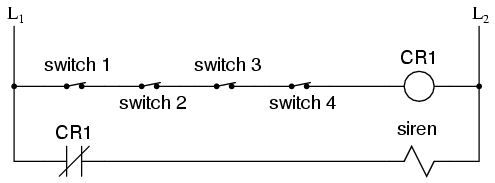
Cuando todos los interruptores están desactivados (el estado operativo normal de este sistema), el relé CR1se energizará, manteniendo así el contacto CR1abierto, impidiendo que la sirena se encienda. Sin embargo, si alguno de los interruptores se activa, el relé CR1se desenergizará, cerrando el contacto CR1y haciendo sonar la alarma. Además, si hay una rotura en el cableado en cualquier parte del peldaño superior del circuito, sonará la alarma. Cuando se descubre que la alarma es falsa, los trabajadores de la instalación sabrán que algo falló en el sistema de alarma y que es necesario repararlo.
Por supuesto, el circuito es más complejo que antes de agregar el relé de control, y el sistema aún podría fallar en el modo "silencioso" con una conexión rota en el peldaño inferior, pero sigue siendo un diseño más seguro que el circuito original y, por lo tanto, preferible desde el punto de vista de la seguridad.
Este diseño de circuito se conoce comoa prueba de fallos, debido a su diseño previsto para pasar al modo más seguro en caso de una falla común, como una conexión rota en el cableado del interruptor. El diseño a prueba de fallas siempre comienza con una suposición sobre el tipo más probable de falla en el cableado o componente, y luego intenta configurar las cosas para que dicha falla haga que el circuito actúe de la manera más segura, siendo la "forma más segura" determinada por las características físicas del proceso.
Tomemos, por ejemplo, una válvula accionada eléctricamente (solenoide) para abrir el suministro de agua de refrigeración a una máquina. Al energizar la bobina del solenoide se moverá una armadura que luego abre o cierra el mecanismo de la válvula, dependiendo del tipo de válvula que especifiquemos. Un resorte devolverá la válvula a su posición "normal" cuando el solenoide esté desenergizado. Ya sabemos que es más probable una falla abierta en el cableado o la bobina del solenoide que un cortocircuito o cualquier otro tipo de falla, por lo que debemos diseñar este sistema para que esté en su modo más seguro con el solenoide desenergizado.
Si estamos controlando el agua de refrigeración con esta válvula, es probable que sea más seguro abrir el agua de refrigeración en caso de una falla que cerrarla, ya que las consecuencias de que una máquina funcione sin refrigerante suelen ser graves. Esto significa que debemos especificar una válvula que se abra (se abra) cuando se desenergice y se apague (se cierre) cuando se energice. Puede parecer "al revés" tener la válvula configurada de esta manera, pero al final hará que el sistema sea más seguro.
Una aplicación interesante del diseño a prueba de fallas es en la industria de generación y distribución de energía, donde los grandes disyuntores deben abrirse y cerrarse mediante señales de control eléctrico de relés de protección. Si un relé 50/51 (sobrecorriente instantánea y de tiempo) va a ordenar que se dispare (abra) un disyuntor en caso de corriente excesiva, ¿deberíamos diseñarlo de manera que el relécierraun contacto de interruptor para enviar una señal de "disparo" al interruptor, oabre¿Un contacto de interruptor para interrumpir una señal de "encendido" regular para iniciar un disparo del disyuntor? Sabemos que lo más probable es que se produzca una conexión abierta, pero ¿cuál es el estado más seguro del sistema: interruptor abierto o interruptor cerrado?
Al principio, parecería que sería más seguro tener un disparo grande del disyuntor (abrir y apagar la energía) en caso de una falla abierta en el circuito de control del relé de protección, tal como teníamos el sistema de alarma contra incendios predeterminado en un estado de alarma con cualquier falla en el interruptor o el cableado. Sin embargo, las cosas no son tan sencillas en el mundo del alto poder. Tener un gran disyuntor abierto indiscriminadamente no es un asunto menor, especialmente cuando los clientes dependen del suministro continuo de energía eléctrica para abastecer hospitales, sistemas de telecomunicaciones, sistemas de tratamiento de agua y otras infraestructuras importantes. Por esta razón, los ingenieros de sistemas de energía generalmente han acordado diseñar circuitos de relés de protección para generar unacerradoseñal de contacto (alimentación aplicada) para abrir disyuntores grandes, lo que significa que cualquier fallo de apertura en el cableado de control pasará desapercibido, dejando simplemente el disyuntor en la posición status quo.
¿Es esta una situación ideal? Por supuesto que no. Si un relé de protección detecta una condición de sobrecorriente mientras el cableado de control no está abierto, no podrá abrir el disyuntor. Al igual que el primer diseño del sistema de alarma contra incendios, la falla "silenciosa" será evidente sólo cuando el sistema sea necesario. Sin embargo, diseñar el circuito de control de otra manera, de modo que cualquier falla abierta apagara inmediatamente el disyuntor, potencialmente bloqueando grandes partes de la red eléctrica, realmente no es una mejor alternativa.
Se podría escribir un libro entero sobre los principios y prácticas del buen diseño de sistemas a prueba de fallos. Al menos aquí, usted conoce algunos de los fundamentos: que el cableado tiende a fallar en apertura con más frecuencia que en cortocircuito, y que el modo de falla (abierto) de un sistema de control eléctrico debe ser tal que indique y/o active el proceso de la vida real en el modo alternativo más seguro. Estos principios fundamentales se extienden también a los sistemas no eléctricos: identificar el modo de falla más común y luego diseñar el sistema de manera que el modo de falla probable coloque al sistema en las condiciones más seguras.
- REVISAR:
- El objetivo dea prueba de fallosEl diseño es hacer que un sistema de control sea lo más tolerante posible a posibles fallas de cableado o componentes.
- El tipo más común de falla de cableado y componentes es un circuito "abierto" o una conexión rota. Por lo tanto, un sistema a prueba de fallas debe diseñarse para que funcione de manera predeterminada en su modo de operación más seguro en caso de un circuito abierto.
Programmable logic controllers
Antes de la llegada de los circuitos lógicos de estado sólido, los sistemas de control lógico se diseñaban y construían exclusivamente en torno a relés electromecánicos. Los relés están lejos de ser obsoletos en el diseño moderno, pero han sido reemplazados en muchas de sus funciones anteriores como dispositivos de control de nivel lógico, relegados con mayor frecuencia a aquellas aplicaciones que exigen conmutación de alta corriente y/o alto voltaje.
Los sistemas y procesos que requieren control de "encendido/apagado" abundan en el comercio y la industria modernos, pero dichos sistemas de control rara vez se construyen a partir de relés electromecánicos o puertas lógicas discretas. En cambio, las computadoras digitales satisfacen la necesidad, que puede serprogramadopara realizar una variedad de funciones lógicas.
A finales de la década de 1960, una empresa estadounidense llamada Bedford Associates lanzó un dispositivo informático al que llamaronMODICON. Como acrónimo, significabaModpopularDigitalController, y más tarde se convirtió en el nombre de una división de la empresa dedicada al diseño, fabricación y venta de estas computadoras de control de propósito especial. Otras empresas de ingeniería desarrollaron sus propias versiones de este dispositivo, y finalmente llegó a ser conocido en términos no propietarios como unPLC, oPprogramableLlógicaCcontrolador. El propósito de un PLC era reemplazar directamente los relés electromecánicos como elementos lógicos, sustituyendo en su lugar una computadora digital de estado sólido con un programa almacenado, capaz de emular la interconexión de muchos relés para realizar ciertas tareas lógicas.
Un PLC tiene muchos terminales de "entrada", a través de los cuales interpreta estados lógicos "altos" y "bajos" de sensores e interruptores. También tiene muchos terminales de salida, a través de los cuales emite señales "altas" y "bajas" para encender luces, solenoides, contactores, motores pequeños y otros dispositivos que se prestan para el control de encendido/apagado. En un esfuerzo por hacer que los PLC sean fáciles de programar, su lenguaje de programación fue diseñado para parecerse a diagramas de lógica de escalera. Por lo tanto, un electricista industrial o un ingeniero eléctrico acostumbrado a leer esquemas de lógica de escalera se sentiría cómodo programando un PLC para realizar las mismas funciones de control.
Los PLC son computadoras industriales y, como tales, sus señales de entrada y salida suelen ser de 120 voltios CA, al igual que los relés de control electromecánicos para los que fueron diseñados para reemplazar. Aunque algunos PLC tienen la capacidad de ingresar y emitir señales de voltaje CC de bajo nivel de la magnitud utilizada en los circuitos de compuerta lógica, esta es la excepción y no la regla.
Los estándares de programación y conexión de señales varían algo entre los diferentes modelos de PLC, pero son lo suficientemente similares como para permitir una introducción "genérica" a la programación de PLC aquí. La siguiente ilustración muestra un PLC simple, tal como podría verse desde una vista frontal. Dos terminales de tornillo proporcionan conexión a 120 voltios de CA para alimentar los circuitos internos del PLC, etiquetados como L1 y L2. Seis terminales de tornillo en el lado izquierdo brindan conexión a dispositivos de entrada; cada terminal representa un "canal" de entrada diferente con su propia etiqueta "X". El terminal de tornillo inferior izquierdo es una conexión "común", que generalmente está conectada a L2 (neutro) de la fuente de alimentación de 120 VCA.
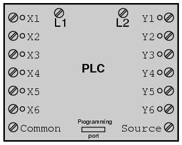
Dentro de la carcasa del PLC, conectado entre cada terminal de entrada y el terminal común, hay un dispositivo optoaislador (diodo emisor de luz) que proporciona una señal lógica "alta" aislada eléctricamente al circuito de la computadora (un fototransistor interpreta la luz del LED) cuando se aplica energía de 120 VCA entre el terminal de entrada respectivo y el terminal común. Un LED indicador en el panel frontal del PLC proporciona una indicación visual de una entrada "energizada":
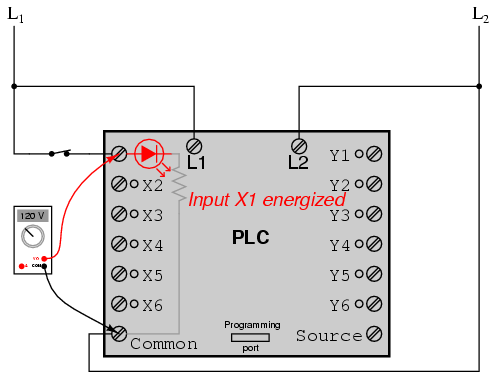
Las señales de salida son generadas por los circuitos de la computadora del PLC que activan un dispositivo de conmutación (transistor, TRIAC o incluso un relé electromecánico), conectando el terminal "Fuente" a cualquiera de los terminales de salida etiquetados "Y-". El terminal "Fuente", correspondientemente, generalmente está conectado al lado L1 de la fuente de alimentación de 120 VCA. Al igual que con cada entrada, un LED indicador en el panel frontal del PLC proporciona una indicación visual de una salida "energizada":
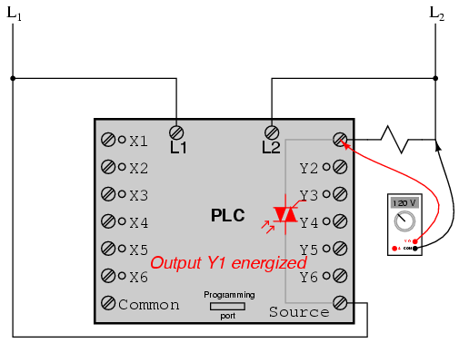
De esta manera, el PLC puede interactuar con dispositivos del mundo real, como interruptores y solenoides.
El reallógicadel sistema de control se establece dentro del PLC mediante un programa informático. Este programa dicta qué salida se activa bajo qué condiciones de entrada. Aunque el programa en sí parece ser un diagrama de lógica de escalera, con símbolos de interruptor y relé, no hay contactos de interruptor ni bobinas de relé reales que operen dentro del PLC para crear las relaciones lógicas entre entrada y salida. Estos sonimaginariocontactos y bobinas, por así decirlo. El programa se ingresa y se ve a través de una computadora personal conectada al puerto de programación del PLC.
Considere el siguiente circuito y programa de PLC:
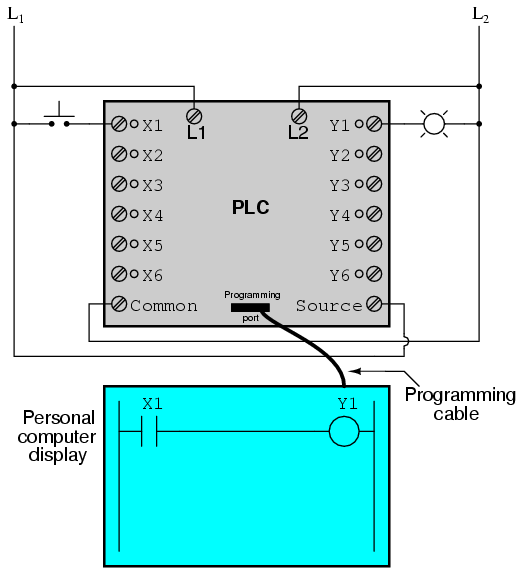
Cuando el interruptor de botón no se acciona (no se presiona), no se envía energía a la entrada X1 del PLC. Siguiendo el programa, que muestra un contacto X1 normalmente abierto en serie con una bobina Y1, no se enviará "potencia" a la bobina Y1. Por lo tanto, la salida Y1 del PLC permanece desenergizada y la lámpara indicadora conectada a ella permanece apagada.
Sin embargo, si se presiona el interruptor de botón, se enviará energía a la entrada X1 del PLC. Todos y cada uno de los contactos X1 que aparecen en el programa asumirán el estado activado (no normal), como si fueran contactos de relé activados por la activación de una bobina de relé denominada "X1". En este caso, energizar la entrada X1 hará que el contacto X1 normalmente abierto se "cierre", enviando "energía" a la bobina Y1. Cuando la bobina Y1 del programa se "energiza", la salida Y1 real se energizará, iluminando la lámpara conectada a ella:
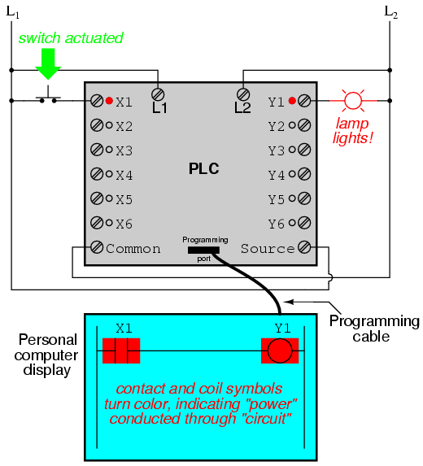
Debe entenderse que el contacto X1, la bobina Y1, los cables de conexión y la "alimentación" que aparecen en la pantalla de la computadora personal son todosvirtual. No existen como componentes eléctricos reales. Existen como comandos en un programa de computadora (solo una pieza de software) que se parece a un diagrama esquemático de relé real.
Igualmente importante es comprender que la computadora personal utilizada para mostrar y editar el programa del PLC no es necesaria para el funcionamiento continuo del PLC. Una vez que se ha cargado un programa en el PLC desde la computadora personal, la computadora personal se puede desconectar del PLC y el PLC continuará siguiendo los comandos programados. Incluyo la pantalla de la computadora personal en estas ilustraciones únicamente para su beneficio, para ayudar a comprender la relación entre las condiciones de la vida real (cierre del interruptor y estado de la lámpara) y el estado del programa ("potencia" a través de contactos y bobinas virtuales).
La verdadera potencia y versatilidad de un PLC se revela cuando queremos alterar el comportamiento de un sistema de control. Al ser el PLC un dispositivo programable, podemos alterar su comportamiento cambiando los comandos que le damos, sin tener que reconfigurar los componentes eléctricos conectados a él. Por ejemplo, supongamos que quisiéramos hacer que este circuito de interruptor y lámpara funcione de manera invertida: presione el botón para hacer que la lámpara encienda.offy suéltelo para que gireon. La solución de "hardware" requeriría que un interruptor de botón normalmente cerrado fuera sustituido por el interruptor normalmente abierto actualmente en funcionamiento. La solución "software" es mucho más sencilla: basta con modificar el programa para que el contacto X1 esté normalmente cerrado en lugar de normalmente abierto.
En la siguiente ilustración, tenemos el sistema alterado que se muestra en el estado en el que el pulsador no está accionado (notsiendo presionado):
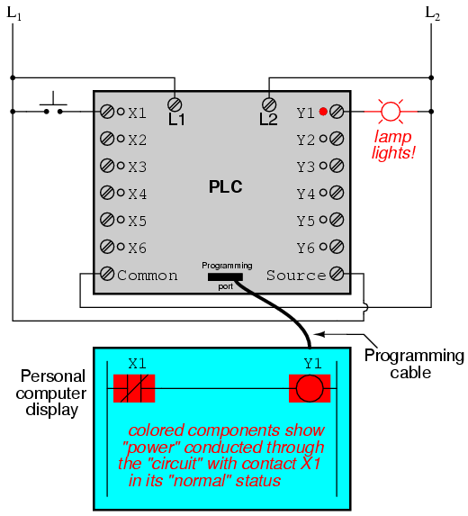
En la siguiente ilustración, el interruptor se muestra activado (presionado):
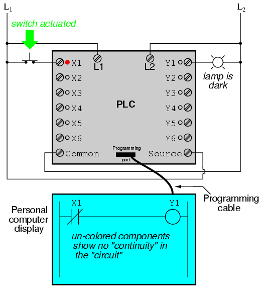
Una de las ventajas de implementar el control lógico en software en lugar de hardware es que las señales de entrada se pueden reutilizar tantas veces en el programa como sea necesario. Por ejemplo, tome el siguiente circuito y programa, diseñados para energizar la lámpara si al menos dos de los tres interruptores de botón se accionan simultáneamente:
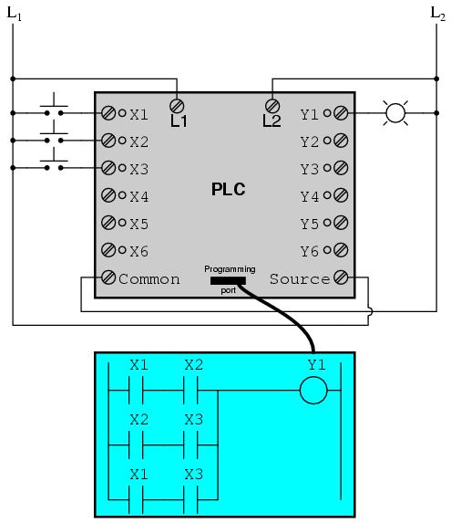
Para construir un circuito equivalente utilizando relés electromecánicos, se tendrían que utilizar tres relés con dos contactos normalmente abiertos cada uno, para proporcionar dos contactos por interruptor de entrada. Usando un PLC, sin embargo, podemos programar tantos contactos como queramos para cada entrada "X" sin agregar hardware adicional, ya que cada entrada y cada salida no es más que un bit en la memoria digital del PLC (ya sea 0 o 1), y se puede recuperar tantas veces como sea necesario.
Además, como cada salida del PLC no es más que un bit en su memoria, podemos asignar contactos en un programa de PLC "actuados" por un estado de salida (Y). Tomemos, por ejemplo, el siguiente sistema, un circuito de control de arranque y parada de motor:
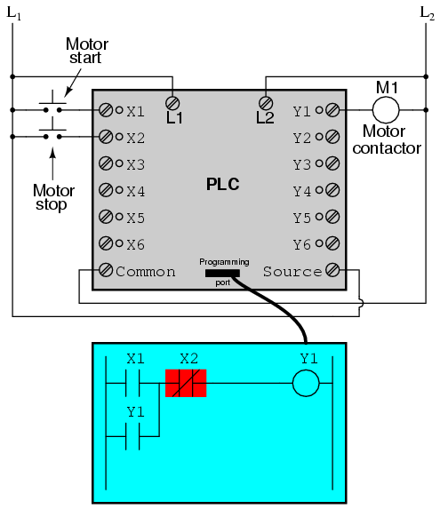
El interruptor de botón conectado a la entrada X1 sirve como interruptor de "Inicio", mientras que el interruptor conectado a la entrada X2 sirve como "Parada". Otro contacto en el programa, denominado Y1, utiliza el estado de la bobina de salida como un contacto sellado, directamente, de modo que el contactor del motor continuará energizado después de soltar el botón pulsador "Arranque". Puede ver que el contacto normalmente cerrado X2 aparece en un bloque de color, lo que muestra que está en un estado cerrado ("conductor eléctrico").
Si tuviéramos que presionar el botón "Inicio", la entrada X1 se energizaría, "cerrando" así el contacto X1 en el programa, enviando "energía" a la "bobina" Y1, energizando la salida Y1 y aplicando energía de 120 voltios CA a la bobina del contactor del motor real. El contacto paralelo Y1 también se "cerrará", bloqueando así el "circuito" en un estado energizado:
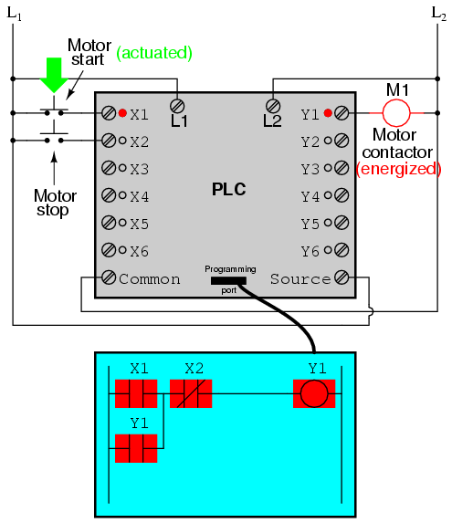
Ahora, si soltamos el botón "Arranque", el "contacto" X1 normalmente abierto volverá a su estado "abierto", pero el motor continuará funcionando porque el "contacto" sellado Y1 continúa proporcionando "continuidad" a la "alimentación" de la bobina Y1, manteniendo así la salida Y1 energizada:
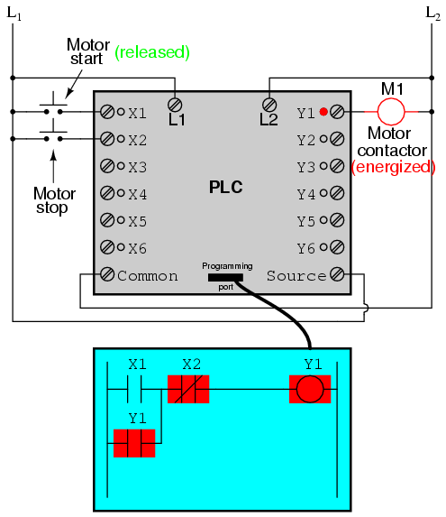
Para detener el motor, debemos presionar momentáneamente el botón "Stop", que energizará la entrada X2 y "abrirá" el "contacto" normalmente cerrado, rompiendo la continuidad a la "bobina" Y1:
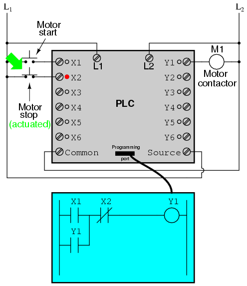
Cuando se suelta el botón "Parar", la entrada X2 se desenergizará, devolviendo el "contacto" X2 a su estado normal "cerrado". Sin embargo, el motor no arrancará de nuevo hasta que se accione el botón "Start", porque se ha perdido el "sello" de Y1:
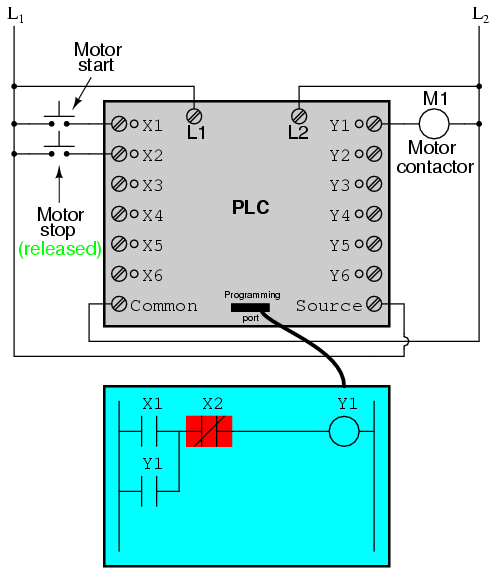
Un punto importante a destacar aquí es quea prueba de fallosEl diseño es tan importante en los sistemas controlados por PLC como en los sistemas controlados por relés electromecánicos. Siempre se deben considerar los efectos del cableado fallido (abierto) en el dispositivo o dispositivos que se están controlando. En este ejemplo de circuito de control del motor, tenemos un problema: si el cableado de entrada para X2 (el interruptor "Parada") fallara al abrirse, ¡no habría forma de detener el motor!
La solución a este problema es una inversión de la lógica entre el "contacto" X2 dentro del programa PLC y el botón pulsador "Parada" real:
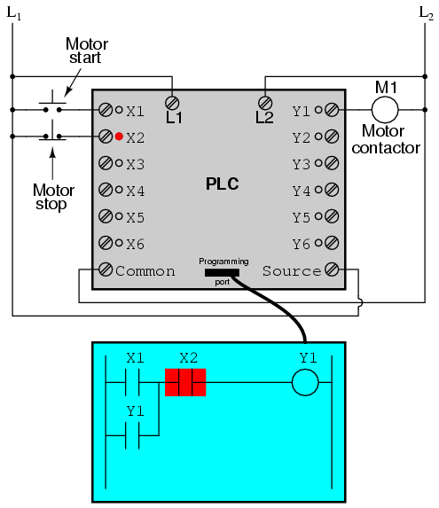
Cuando el botón pulsador "Parada" normalmente cerrado no está accionado (no presionado), la entrada X2 del PLC se energizará, "cerrando" así el "contacto" X2 dentro del programa. Esto permite que el motor arranque cuando la entrada X1 está energizada y le permite continuar funcionando cuando ya no se presiona el botón "Arranque". Cuando se acciona el botón "Parada", la entrada X2 se desenergizará, "abriendo" así el "contacto" X2 dentro del programa PLC y apagando el motor. Entonces, vemos que no hay diferencia operativa entre este nuevo diseño y el diseño anterior.
Sin embargo, si el cableado de entrada en la entrada X2 fallara al abrirse, la entrada X2 se desenergizaría de la misma manera que cuando se presiona el botón "Parar". Entonces, el resultado de una falla de cableado en la entrada X2 es que el motor se apagará inmediatamente. Este es un diseño más seguro que el mostrado anteriormente, donde una falla en el cableado del interruptor de "Parada" habría resultado en unaincapacidadpara apagar el motor.
Además de los elementos del programa de entrada (X) y salida (Y), los PLC proporcionan bobinas y contactos "internos" sin conexión intrínseca con el mundo exterior. Estos se utilizan de manera muy similar a los "relés de control" (CR1, CR2, etc.) en los circuitos de relés estándar: para proporcionar inversión de señal lógica cuando sea necesario.
Para demostrar cómo se podría utilizar uno de estos relés "internos", considere el siguiente circuito y programa de ejemplo, diseñados para emular la función de una puerta NAND de tres entradas. Dado que los elementos del programa PLC generalmente están diseñados con letras individuales, llamaré al relé de control interno "C1" en lugar de "CR1", como sería habitual en un circuito de control de relés:
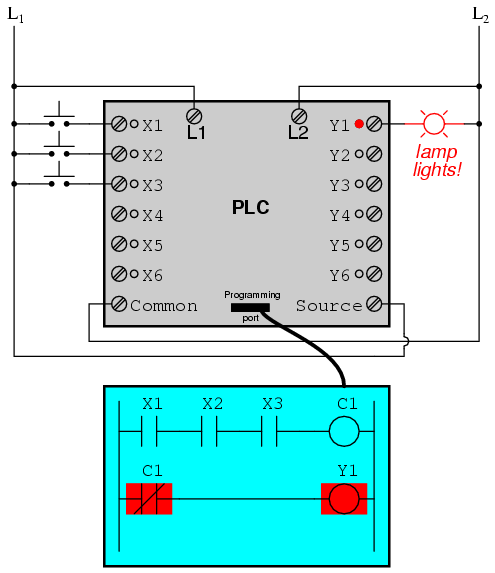
En este circuito, la lámpara permanecerá encendida mientrasanyde los pulsadores permanecen sin accionar (sin presionar). Para que la lámpara se apague tendremos que accionar (pulsar)alltres interruptores, así:
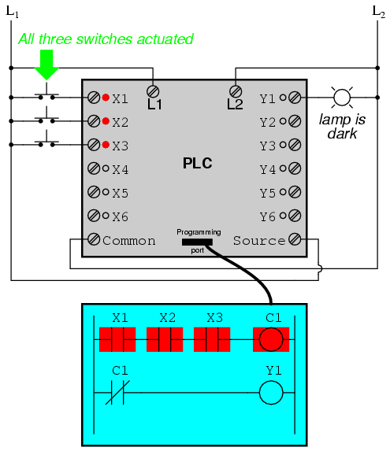
Esta sección sobre controladores lógicos programables ilustra sólo una pequeña muestra de sus capacidades. Al igual que las computadoras, los PLC pueden realizar funciones de temporización (equivalentes a relés de retardo de tiempo), secuenciación de tambores y otras funciones avanzadas con mucha mayor precisión y confiabilidad que lo que es posible utilizando dispositivos lógicos electromecánicos. La mayoría de los PLC tienen capacidad para más de seis entradas y seis salidas. La siguiente fotografía muestra varios módulos de entrada y salida de un único PLC Allen-Bradley.
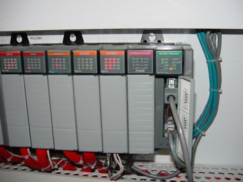
Dado que cada módulo tiene dieciséis "puntos" de entrada o salida, este PLC tiene la capacidad de monitorear y controlar docenas de dispositivos. Instalado en un armario de control, un PLC ocupa poco espacio, especialmente si se tiene en cuenta el espacio equivalente que necesitarían los relés electromecánicos para realizar las mismas funciones:
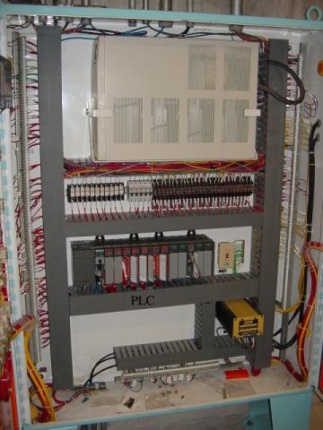
Una ventaja de los PLC que simplementeno puedoser duplicado por relés electromecánicos es el monitoreo y control remoto a través de redes informáticas digitales. Debido a que un PLC no es más que una computadora digital de propósito especial, tiene la capacidad de comunicarse con otras computadoras con bastante facilidad. La siguiente fotografía muestra una computadora personal que muestra una imagen gráfica de un proceso real de nivel de líquido (una estación de bombeo o "elevación" para un sistema de tratamiento de aguas residuales municipal) controlado por un PLC. La estación de bombeo real se encuentra a kilómetros de distancia de la pantalla de la computadora personal:
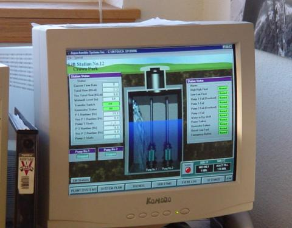
Colaboradores
Los contribuyentes a este capítulo se enumeran en orden cronológico de sus contribuciones, desde el más reciente hasta el primero. Consulte el Apéndice 2 (Lista de colaboradores) para fechas e información de contacto.
Roger Hollingsworth(Mayo de 2003): Sugirió una forma de hacer que el circuito de control del motor PLC sea a prueba de fallas.
Lecciones en circuitos eléctricoscopyright (C) 2000-2023 Tony R. Kuphaldt, según los términos y condiciones delCC BY License.